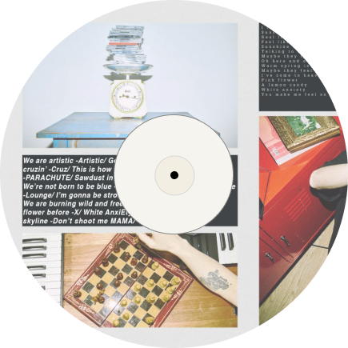
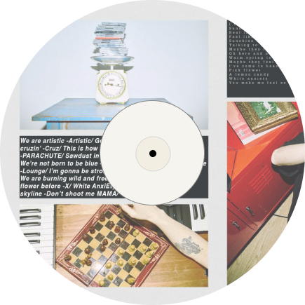

히피 같은 내 방랑을 다 받아줄
집시같은 너 내 여왕
아침이 밝으면 가방을 싸
저녁 전에 이미 활주로 떠나
같이 도망가자
바다 파랗고 저 데모 소리 안 들리는 곳
사람들 chill 한 곳
시간이 돈이고 내 돈이고 여권이자 통역
쟤네는 여행객
우린 탈주범
여기저기 싸돌아다닐 여권 네개 채운 도장들
LP 둘에 EP와 믹스테잎
여기까진 부족해 가자
거기 말 좀 안 통한들 뭐 어때
사람 사는데는 다 비슷해
무대에서 라운지에서 바로 비행기
손잡이 걷어올려 너랑 붙어 쉬겠지
눈 뜨면 바로 딴 나라 딴 바닷바람
근데 거기 네가 없다면 버릴 여행지
손가락 둘씩 합쳐서 두 쌍의 피스아웃
너랑 볼 태양 얼마든 안 비싸
여기 별 없는 하늘
경적소리 뒷담 전부 두고 폰 꺼
인생 짧으니까
세상이 어지러워 갈 데가 더 줄어가
더 늦기 전에 잘라내자 우리 무력감
인간의 때가 덜 묻은 해안 위에
내게 취해 밤새워 헤엄치게
yeah baby
너랑 나 코치 말고 1등
라운지에서 라운지에서 라운지 yeah
날씨가 싫거나 별 보고 싶음 말해줘
다 데려갈게
yeah baby
너랑 나 게이트에서 게이트
라운지에서 라운지에서 라운지 yeah
라운지에서 라운지에서 라운지 yeah
라운지에서 라운지
세상이 허락할 때
닫을 괄호들이 너무 많은 통빡 굴리는 애들 사이
숨쉬기 힘들어졌네
저 톱니들의 삐걱거림 사이 소름
신경 곤두서 눈 뜨고 걷기 피곤한 상태
난 지금 세상의 잣대 다 피해
가책 없이 취할 내 도피처를 찾네
야자나무 사이 빼꼼히 보이는
너의 그 실루엣과 그 뒤태에 그 비전을 봤네
대통령이 사이비랑 놀아나서 나라 팔아 먹었지
바다 건너 저긴 피부색이 다름 엿 먹지
저긴 폭탄 저긴 빚더미
저긴 종교 핍박에 아기들도 총을 들지 겁 없이
시대가 어지럽고 갈 데는 줄어가
더 늦기 전에 보러 가자 별이 수놓은 밤
인간의 때가 덜 묻은 해안 위에
너랑 나 잔뜩 취해 헤엄치게
yeah baby
너랑 나 코치 말고 1등
라운지에서 라운지에서 라운지 yeah
날씨가 싫거나 별 보고 싶음 말해줘
다 데려갈게
yeah baby
너랑 나 게이트에서 게이트
라운지에서 라운지에서 라운지 yeah
라운지에서 라운지에서 라운지 yeah
라운지에서 라운지
세상이 허락할 때
히피같은 내 방랑을 다 받아줄
집시같은 너 내 여왕
아침이 밝으면 가방을 싸
저녁 전에 이미 활주로 떠나
같이 도망가자
바다 파랗고 저 데모 소리 안 들리는 곳
사람들 chill 한 곳
시간이 돈이고 내 돈이 여권이자 통역
쟤네는 여행객
우린 탈주범
yeah baby
너랑 나 코치 말고 1등
라운지에서 라운지에서 라운지 yeah
날씨가 싫거나 별 보고 싶음 말해줘
다 데려갈게
yeah baby
너랑 나 게이트에서 게이트
라운지에서 라운지에서 라운지 yeah
라운지에서 라운지에서 라운지 yeah
라운지에서 라운지
세상이 허락할 때
CODE KUNST - Lounge (Feat. 화지)
 
